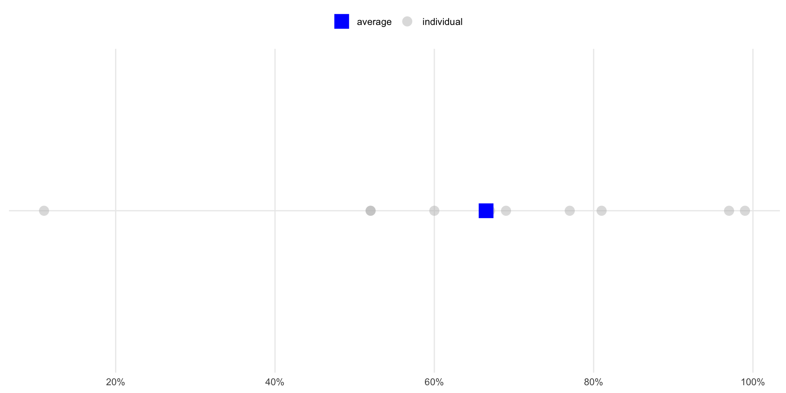
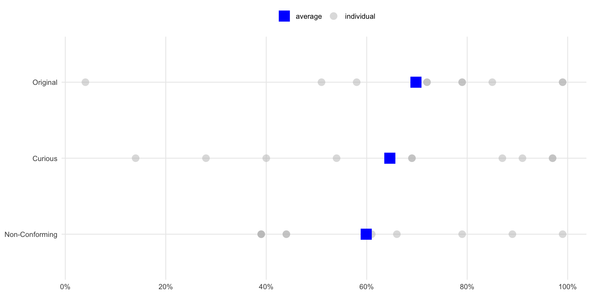

Creative measures how people like to think and innovate, as well as the kind of environment they prefer. It is comprised of three facets: Originality, Curiosity, and Nonconformity.
People with high scores have a deep passion for learning and coming up with novel ideas and new things. They prefer environments in which they can explore new concepts and ways of doing things, and feel stifled in rigid, static environments that are more “set in stone.” People with very high scores may be rebellious and chafe at following rules. On the other hand, those with low scores prefer using tried and true knowledge and skills, as well as maintaining tradition. They tend to be more comfortable with set routines and in environments where they can focus on more rote activities and concrete tasks.
Deliberative describes how people process information to make decisions, solve problems, or complete tasks. It characterizes those who tend to work through decisions more systematically, preferring logic and analysis over intuition. It is comprised of three facets: Logical, Systematic, and Impartial.
People with high scores rely on linear thinking, objectivity, and logic, and they tend to be highly methodical. They tend to spend more time reasoning through and analyzing decisions. Those with low scores tend to be guided more by “their gut,” navigating decisions and circumstances more spontaneously and intuitively.
Detailed and Reliable measures the way people organize their thinking to control, regulate, and direct their impulses toward the achievement of goals and objectives. It is comprised of three facets: Organized, Detail-Oriented and Dependable.
People with high scores prefer to focus on details, be neat and organized, follow a schedule, make concrete plans, and reliably follow through. Their strengths include a focus of attention, planfulness, and precision of output. On the other hand, they may have a tendency to lose the forest in the trees or be overly structured and rigid. People with low scores tend to be less orderly and planful, often preferring to be more spontaneous and emergent in how they organize themselves. They may also prefer to focus on the bigger picture rather than on the details. At times, they can procrastinate and miss deadlines, and so may benefit from working with more detailed or organized people to keep things on track.
Conceptual describes a preference for thinking abstractly and philosophically by identifying and understanding the deeper patterns and connections behind phenomena.
People with high scores prefer to think in terms of abstractions, theories, and models. They love exploring intangible ideas and concepts, and the deeper understanding they generate. They catch on to complex concepts quickly and new ways of thinking and learning. People with low scores prefer to think more concretely or literally and less philosophically. They may see those who score high as a bit impractical or “pie in the sky” and can be attracted to more straightforward and actionable solutions to problems.
Practical describes the preference to approach work with a focus on pragmatic considerations, constraints, and realities of a given decision or question.
People with high scores use and tend to prioritize productivity and utility above others concerns. They tend to be realistic in their focus on the consequences of any action, and may tend to prioritize the “bottom line”. People with low scores can be less focused on the immediate practical consequences of a given action. As a result, they may also be more imaginative and idealistic in approaching decisions and problems in work and life.
Extraverted describes how people prefer to engage with the world of people, opportunities, and experiences around them. It is comprised of three facets: Gregarious, Engaging, and Adventurous.
People with high scores have a preference for engaging and talking with people, and being socially bold and adventurous. They tend to be comfortable in groups and are more inclined to talk out their ideas and thinking with others. People with low scores have a preference for being more private, quiet, and socially cautious. Being more introverted, they like to spend time alone or with a few close friends and acquaintances. They tend to be more comfortable thinking and reflecting by themselves, and be more at ease “behind the scenes” rather than in the spotlight. They tend to cultivate deep and meaningful friendships within their smaller circle of relationships, and prefer not to take the initiative in engaging people they don’t know.
Tough measures one’s willingness to be direct, straightforward, and critical. It is comprised of three facets: Feisty, Critical, and Direct.
People with high scores fight for their ideas, tell people what they really think, and use frank and blunt words to express their views, sometimes at the risk of coming off as “harsh” or “intimidating.” They are comfortable disagreeing with others and don’t shy away from conflict. They tend to hold others accountable, be less diplomatic in their approach, and may be seen as more confrontational. People with low scores tend to be less comfortable with conflict and disagreement, and value harmony even at the expense of being straightforward with others. They tend to be more diplomatic and less inclined to be direct and hold others accountable.
Nurturing measures one’s focus on others’ needs and feelings. It is comprised of three facets: Helpful, Empathetic, and People-Oriented.
People with high scores have a preference for expressing warmth and supportiveness, as well as a concern for and interest in other people’s lives. They tend to value and be primarily motivated by supporting and helping other people. They may tend to avoid involvement in conflict and favor maintaining harmony, particularly if they have lower scores on “Tough”. People with low scores tend to be less sensitive or concerned with the feelings and emotional needs of others. This doesn’t mean they are antagonistic or unkind, simply that they are less interested in and sensitive to the feelings, quirks, and needs of those around them.
Leadership measures how people engage others in a group, a team, or in the achievement of a shared goal. It is comprised of three facets: Demanding, Taking Charge, and Inspiring.
People with high scores tend to be demanding, ready to take charge, and inspire people to work toward a common vision. They tend to be more assertive in taking the reins and providing direction to others. Those with low scores are more tolerant, passive, and prefer to let others take the lead. They may be more comfortable following than leading.
Humorous describes the tendency to approach life with a sense of lightheartedness and joy.
People with high scores use and appreciate humor, and are quick to laugh and make others laugh. They take the daily challenges of life less seriously, even when they may need to. Those with low scores approach things more seriously and soberly. They laugh less and tend not to make light of their own, or others’ circumstances. If they are too serious, they can dampen the joy and fun spirit in others and elevate tension levels by taking things that are meant to be funny and lighthearted too contemplatively.
Composed describes how well people hold themselves together in the face of challenge and stress. It is comprised of three facets: Even-Keeled/Calm, Confident, and Poised.
People with high scores tend to remain calm, confident, and controlled under pressure. High scores reflect strength in handling stressful situations with equanimity, though at times they may come across as emotionally distant to those with lower scores. Lower scorers experience wider fluctuations in moods and emotions, may be more easily discouraged, and experience stronger self-doubts. They tend to react more strongly to stress but, on the other hand, may anticipate problems and threats that others might not yet perceive.
Autonomous measures the preference to take actions or make decisions in a self-directed way. It is comprised of three facets: Independent, Self-Accountable, and Internally-Motivated.
People with high scores tend to prefer to achieve goals independently, take care of their own needs, and assume personal accountability for the outcomes. They don’t wait for others to provide structure or clarity, and are comfortable tackling more open-ended goals without much guidance. People with low scores prefer receiving more direction and clarity from others before taking action or making choices. They may be more inclined to attribute their successes and failures to external factors than to their own personal effort. They may be more fatalistic in facing their challenges and are more comfortable letting events unfold without attempting to actively control them.
Flexible describes how people think and respond to change by adjusting to it and being adaptable. It is comprised of three facets: Adaptable, Agile, and Growth-Seeking.
People with high scores tend to prefer change and think it’s important to progress. They tend to enjoy more iterative modes of working and don’t mind changing plans in the middle of a project, as they’re comfortable adapting their tactics as change occurs. They see mistakes as opportunities, not problems, and are comfortable changing their role and interaction style to suit different people and situations. People with low scores tend to favor stability and predictability. They tend to be uncomfortable with and frustrated by unexpected or constant change. They may see change as more disruptive than positive. They tend to be less inclined to look at their own mistakes or the problems they confront as opportunities for improvement, and prefer the comfort of the status quo.
Determined refers to how people focus their personal energies, attention, and conviction in pursuit of their objectives. It is comprised of three facets: Persistent, Driven, and Proactive.
People with high scores are strongly motivated to pursue their goals regardless of the obstacles faced. They pursue goals with excellence and do it tirelessly, without giving up and sometimes sacrificing other aspects of their lives, e.g., family or leisure. Their drive to succeed may serve them well, but others may see them as having “tunnel vision.” People with lower scores tend to be less motivated by achievement and don’t push through obstacles to get things done. They may give up more easily when faced with impediments, or may simply prioritize other values—e.g., leisure or fun—over achievement.
Humble describes one’s openness to understanding what they don’t know and what to do about it. It is comprised of three facets: Receptive to Criticism, Open-Minded, and Modest.
People with high scores are patient, not easily frustrated by their own or others’ mistakes, and recognize that learning from mistakes is an important part of growth. They seek to learn new knowledge and skills, tend to know when they’re wrong, and are willing to admit and openly examine their mistakes. They like to explore different perspectives, particularly those they disagree with, to see what they might be missing. Those with low scores are inclined to overstate their knowledge and value being right over learning. They tend to be less open to acknowledging their mistakes and weaknesses, particularly publicly. They may believe being wrong and making mistakes are signs of weaknesses rather than opportunities for growth.
Energy describes the degree of stamina and engagement with which people approach everyday work and life.
People with high scores tend to be active and “on the go” all the time, they are seemingly inexhaustible. Activity and stimulation energizes rather than depletes them. On the other hand, people with lower scores tend to be less active and more easily fatigued. They may take more time to themselves after periods of heavy activity, as stimulation tends to deplete, rather than energize, them.
Status-Seeking describes those who value being liked, being admired, or pleasing others as a measure of success.
People with high scores are focused on achieving status, including material wealth and occupational prestige. They tend to prioritize others’ impressions of them, are sensitive to how they are seen, and aspire to be liked and admired. They may be “people pleasers.” People with lower scores tend to be less concerned with how others see them, or in being recognized socially.